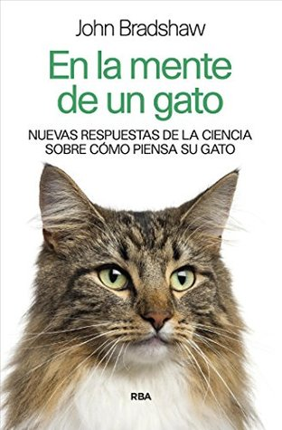

En la mente de un gato: Nuevas respuestas de la ciencia sobre cómo piensa tu gato (NO FICCIÓN) (Spanish Edition)
Reseña por Jorge I. Zuluaga

Ver detalles · Ver reseña en GoodReads (necesita cuenta)
Atar explosivos a la cola de un gato, "patear al gato", meter una camada completa en un costal o ahogarlos para deshacerse de ellos eran consideradas prácticas normales con los únicos felinos que lograron domesticarnos.
Aquellos que tenían gatos como mascotas o amigos esporádicos los alimentaban como si fueran perros: restos de comida o el clásico plato de leche (cuando hoy sabemos que el único mamífero que, siendo adulto, es tolerante a la leche es el humano).
Todo parece haber cambiado en años recientes. ¿Habrá sido internet y sus videos virales, o algo cambió en la sociedad que nos ha hecho más conscientes de los animales que viven entre nosotros?
Independientemente de cuál sea la razón, es claro que hoy los gatos son los animales domésticos más queridos del planeta (por encima incluso de los populares perros, que tienen hoy más detractores que los gatos).
Este florecimiento de la popularidad de los gatos ha hecho que muchos se hayan volcado en las últimas décadas (¡por fin!) a entender la biología y el comportamiento de estos felinos asombrosos.
El libro de Bradshaw es un ejemplo, justamente, de ello.
Se trata de una compilación de resultados científicos, escritos de una manera asequible y agradable, algunos de ellos obtenidos por el mismo autor, que cubren desde la peculiar historia de la especie en el mundo salvaje (del que no se han desligado completamente) y entre nosotros, hasta los esfuerzos más recientes para comprender su psicología, la base genética de la diversidad de sus personalidades e incluso el futuro de la especie entre los humanos.
Una verdadera delicia para los dueños de gatos que, además, somos curiosos y queremos comprender científicamente a nuestros amigos ronroneadores.
He aprendido con el libro mucho sobre nuestros tres gatos: Bigotes, Corchea y Vega. Algo que creo le pasará a cualquier humano con gatos que lea el libro.
De Bigotes, un gato carmelita rayado, ahora sé que por su color solo podría ser macho. También sé que su personalidad de gato clásico de compañía (dependiente y amoroso), si bien moldeada por la interacción con los humanos en sus primeras semanas de vida, es común entre los individuos con rasgos similares (tal vez desciende de gatos pelocorto americano o inglés).
De Corchea, una gata negra, aprendí que su color es producto de una mutación no muy común. Corchea es, pues, nuestra gata mutante. La misma mutación la hace, al parecer, mucho más dulce y cercana a los humanos. De los tres, ella es la única que se deja cargar por largo tiempo y se relaja al punto casi de volverse líquida en los brazos (un rasgo que ha sido observado en algunas especies de gatos con pedigrí).
De Vega, una gatica que adoptamos después de encontrarla en una casa en el campo, y que entró en celo tan solo unas semanas después de llegar a nuestra casa, ahora sé que su desesperación cuando es cargada o acariciada se debe posiblemente a que, por su vida en el campo, no interactuó de forma cercana con humanos en sus primeras cuatro o seis semanas de vida. Aun así, su vida con nosotros la ha convertido en una gata casi "social" (sigue comportándose de forma torpe cuando busca nuestra atención, acercándose como sin querer queriendo).
De todos los datos increíbles que aprendí en este libro, uno me sorprendió de manera especial: el efecto que la esterilización generalizada podría terminar teniendo sobre la especie.
Hoy es casi una condición básica para adoptar un gatito tener los medios económicos para esterilizarlo. Machos y hembras, sea que vengan de camadas de gatos callejeros o con una historia familiar reconocida, son esterilizados en los primeros meses de vida.
Lo hacemos, desde mi perspectiva como compañero humano de gatos, por nuestra propia comodidad. No queremos un gato macho en la casa buscando desesperadamente salir para aparearse, ni una hembra produciendo sonidos extraños en la mitad de la noche o asumiendo posiciones curiosas frente a sus "hermanos".
Sin embargo, esta práctica está haciendo que los nuevos gatos que nacen no sean descendientes de los gatos que viven plácidamente entre nosotros, que se alimentan con una comida integral y no necesitan salir a cazar —menguando las poblaciones silvestres de pájaros o reptiles— o que toleran la presencia de gatos extraños sin sufrir de ansiedad y estrés. Los mejores gatos no se están reproduciendo por nuestra culpa y es posible que, con el tiempo, entre más queremos a los gatos, estemos volviendo la especie al principio, es decir, seleccionando, sin querer queriendo, los genes de una especie no muy cercana, poco sociable, pero que vive entre nosotros por el interés de una fuente relativamente segura de comida. ¿Qué podemos hacer? Primero, lea el libro. Segundo, y es mi sugerencia, por cada tres gatos que tenga en su vida, deje que al menos uno se reproduzca, por lo menos una vez.